|
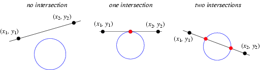
An (infinite) line determined by two points 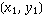 and 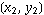 may intersect a circle of radius and center (0, 0) in two imaginary points
(left figure), a degenerate single point (corresponding to the line being tangent
to the circle; middle figure), or two real points (right figure).
In geometry, a line meeting a circle in exactly one point is known as a tangent
line, while a line meeting a circle in exactly two points in known as a secant line (Rhoad et al. 1984, p. 429).
Defining
| 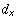 |  | 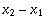 |
(1)
| | 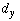 | 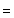 | 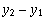 |
(2)
| | 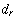 |  | 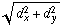 |
(3)
| |  | 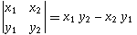 |
(4)
|
gives the points of intersection as
|  | 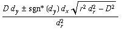 |
(5)
| | 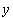 | | 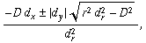 |
(6)
|
where the function is defined
as
The discriminant
therefore determines the incidence of the line and circle, as summarized in the following table.
| incidence | | no intersection | | 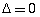 | tangent | | intersection |

Rhoad, R.; Milauskas, G.; and Whipple, R. Geometry for Enjoyment and Challenge, rev. ed. Evanston,
IL: McDougal, Littell & Company, 1984.
|